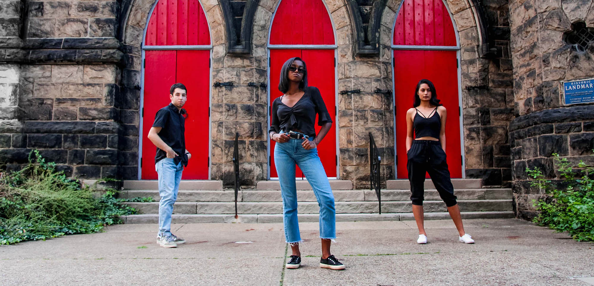
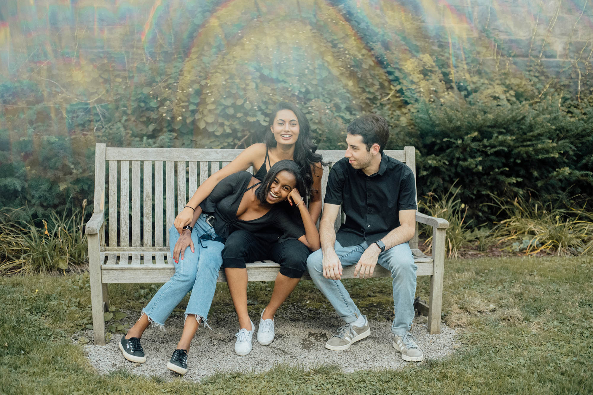

5 Questions with the LG Producers
Posted On: October 8, 2018
Welcome back to CMU! This year’s Lunar Gala Producers are busy getting the show ready and you’re probably pretty busy too, so we boiled down everything you need to know into 5 questions.
Ruhani
What’s your major and year?
Year: Senior
Major: Biology
Minor: Computational Biology
Where is your favorite place to go in Pittsburgh?
Fuku Tea and Dobra Tea, I love tea!
But also Las Palmas
Who is your style icon?
Kendall but on some days Khloe
What’s one passion you have outside of LG?
Nature and travelling, my all time favorite place is the fjords of Norway
Tell us one thing people can expect from this year’s LG.
A beautiful intersection between fashion and technology from the talented students right here on campus.
Kenny
What’s your major and year?
Year: Senior
Major: Information Systems
Where is your favorite place to go in Pittsburgh?
Hyde Park, a beautiful restaurant on the river by the point
Who is your style icon?
Bryan James has made some pretty cool pieces. In particular a fan of In Pieces an interactive exhibition he created to study many of the world’s most endangered species
What’s one passion you have outside of LG?
Musical Theater, if you see me around campus with my headphones in I'm probably listening to some classic Broadway hit or a new off-broadway banger.
Tell us one thing people can expect from this year’s LG.
A paradigm shift, a radical disruption of the fashion industry.
Jumana
What’s your major and year?
Year: Junior
Major: Neuroscience
Where is your favorite place to go in Pittsburgh?
Any small coffee shop
Who is your style icon?
Alexa Chung the “It Girl”
What’s one passion you have outside of LG?
Feminism. As Michelle Obama once said, "There is no limit to what we, as women, can accomplish."
Tell us one thing people can expect from this year’s LG.
An experimental and stimulating production; something akin to even the highest of fashion houses.
Hopefully getting to know a little about the producers and what they expect from this year’s show gets you just as excited as we are. The producers are just the first set of faces behind the scenes, stay tuned to meet the whole team!
